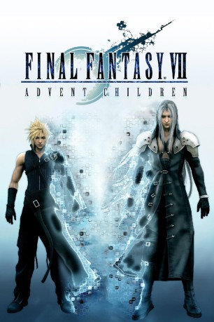

#6313 Final Fantasy VII: Advent Children
 
 IMDB-Wertung: 7.4 / 10
IMDB-Wertung: 7.4 / 10  Metascore: 0
Metascore: 0 
Die Erde der Zukunft wird beherrscht und ausgebeutet vom Industriekonzern Shinra und dessen Söldnern. Zuletzt sind auch Shinra mächtige Gegner erwachsen, sowohl in Form rühriger Revolutionäre als auch in Gestalt des über wundersame Kräfte verfügenden Ex-Söldners Sephiroth. Seit letzterer von Widerstandskämpfer Cloud zur Strecke gebracht wurde, herrscht so etwas wie Waffenruhe vor dem Sturm, die nun gestört wird, als ein Rebell namens Kadaj die Widerauferstehung des Sephiroth betreibt.
Jahr: 2005
Dauer: 126 Minuten
FSK: 12
Land: Japan Studio: Sony Pictures Home EntertainmentTonspuren: DD5.1 - ,
Untertitel: Deutsch, Englisch, , , ,
Auflösung: 720p (1280x720) Größe: 4474 MB
Genre: Action, Thriller, Sci-Fi, Abenteuer, Fantasy, Animation/Trick
Regisseur: Tetsuya Nomura, Takeshi Nozue
Drehbuch: Reza Memari
Soundtrack:
Darsteller:
Datei: X:\HD-Trick-Collections\Final Fantasy\Final Fantasy VII Advent Children (2005, FSK12, 1280x720).mkv seit 08.06.2017
Festplatte: Kinder-Filme+Trick
 Alle Filme aus Gruppe 'HD-Trick-Collections\Final Fantasy'
Alle Filme aus Gruppe 'HD-Trick-Collections\Final Fantasy'